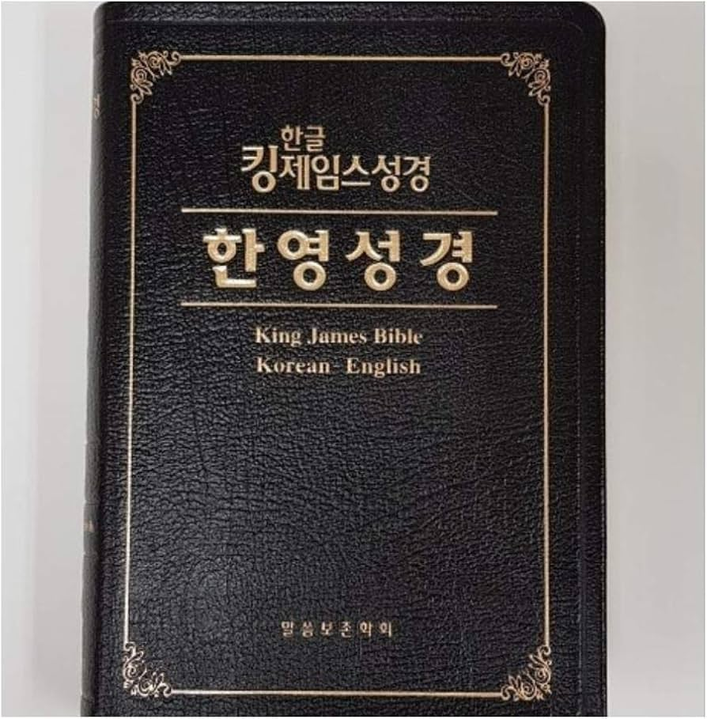

성경을 왜 읽어야 할까요?
예수님의 제자는 다음과 같은 사람입니다:
- 예수 그리스도가 하나님의 아들이라고 믿는 사람
- 예수님을 구세주로 받아들인 사람
- 예수님의 가르침과 예수님이 우리를 위해 계획하신 삶의 방식에 따라 살아가기로 결정한 사람
하나님을 제대로 알고 싶다면 성경을 읽어야 한다고 말하는 사람들이 있습니다. 예수님의 제자로서, 즉 예수님께서 이 땅에 계실 때 가르치신 대로 살기로 결심한 사람이라면 성경을 읽어야 합니다. 우리는 왜 예수님을 하나님의 아들로 믿는지, 또 하나님께서 왜 예수님을 우리를 구원하시기 위해 이 세상에 보내셨는지 알아야 합니다.
성경 읽는 것이 익숙하지 않거나 성경에 대해 잘 모르시더라도 걱정하지 마세요! 이 작은 책자는 성경이 어떤 책인지 이해하는 데 도움을 드리기 위해 만들어졌습니다.
- 성경이 어떻게 쓰였는지
- 성경에서 이야기나 구절을 찾는 방법
- 성경이 전하는 주요 이야기
하나님께서는 성경을 통해 당신이 그분을 더 깊이 알아가도록 축복하시고, 당신을 그분께 더 가까이 이끌어 주실 것입니다!